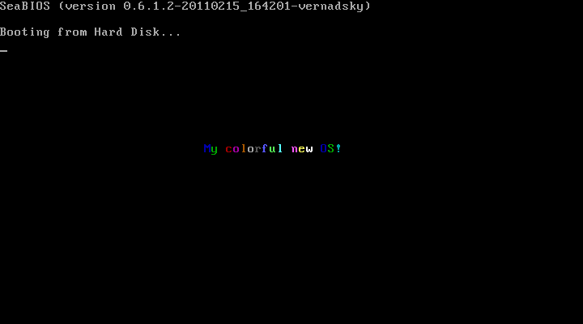

The natural first step of building an operating system is to find a way to run programs on "bare hardware". The task turns out to be quite easy despite its daunting first impression. After researching on the net and trying out various tutorials, I found all of them overly complicated. Most of them assume interfacing with a C-like language and implementing a Unix-like system, but C and Unix are not the only story about operating systems design. A boot sector tutorial should teach nothing more than how to boot a computer.
After learning the good parts from the tutorials and applying my own simplifications, I arrived at my first boot sector. It is very simple and does very little -- it just boots the machine and displays a colorful banner -- but it illustrates the only things you need to know for booting a computer.
The code is very short -- only 21 lines of code excluding comments and blank lines.
org 7C00H ; the program will be loaded at 7C00H start: mov eax, string_start mov ch, 1 ; ch contains color of text mov ebx, 0B8000H + 718H ; B8000H is VGA memory ; 718H is offset to approx center print: mov cl, [eax] ; load char into cl mov [ebx], cx ; store [color:char] from cx into VGA add ch, 1 ; change color to (ch+1) mod 16 and ch, 0x0F add eax, 1 ; advance string pointer add ebx, 2 ; advance VGA pointer cmp eax, string_end ; until the end of string jg stop jmp print stop: jmp stop ; infinite loop after printing string_start db 'My colorful new OS!' string_end equ $ times 510-($-$$) db 0 ; pad remainder of boot sector with 0s dw 0xAA55 ; standard PC boot signature
It is in NASM syntax and needs nasm to be assembled into machine code. After that it can be booted by QEMU, a processor emulator. The only two necessary command lines are (assuming the code is stored in a file named myfirst.asm):
nasm -f bin -o myfirst.bin myfirst.asm qemu -hda myfirst.bin
Of course, you can also burn the disk image (myfirst.bin) onto a CD and boot a real machine from it.